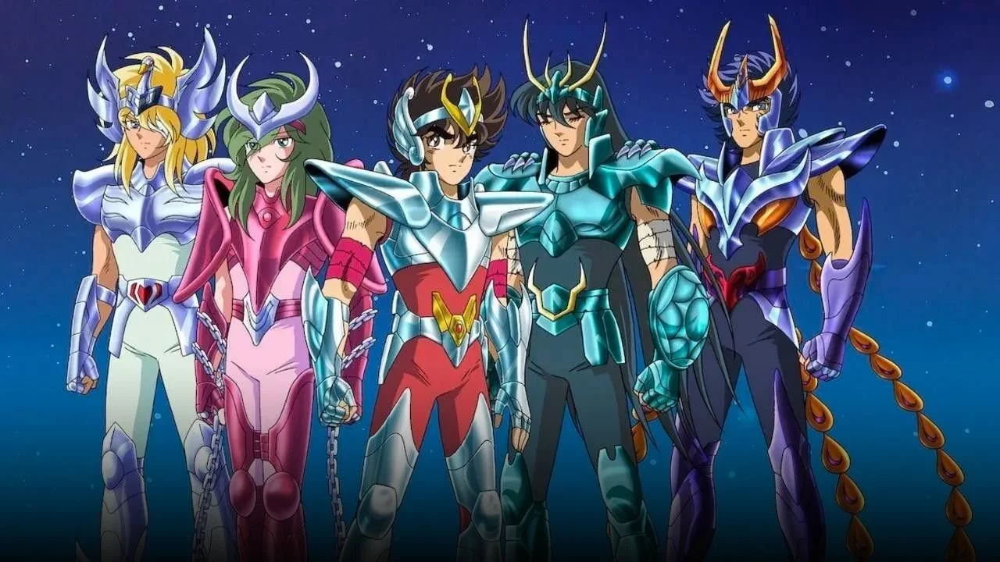
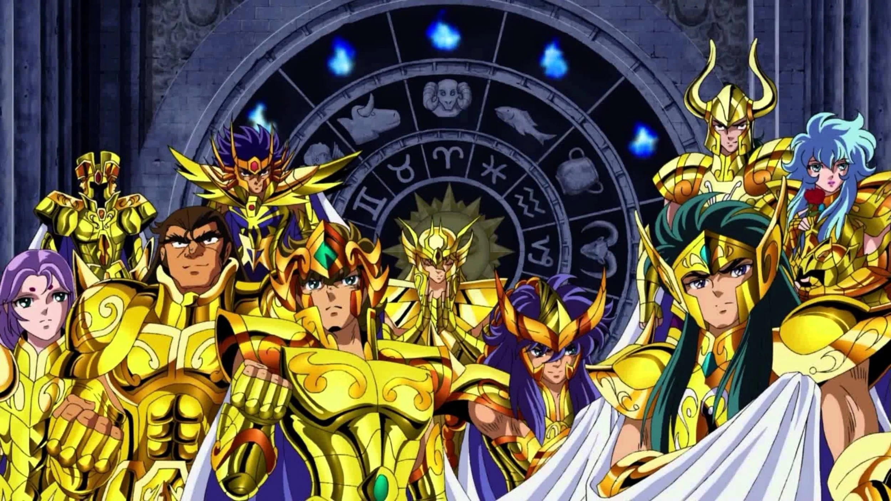
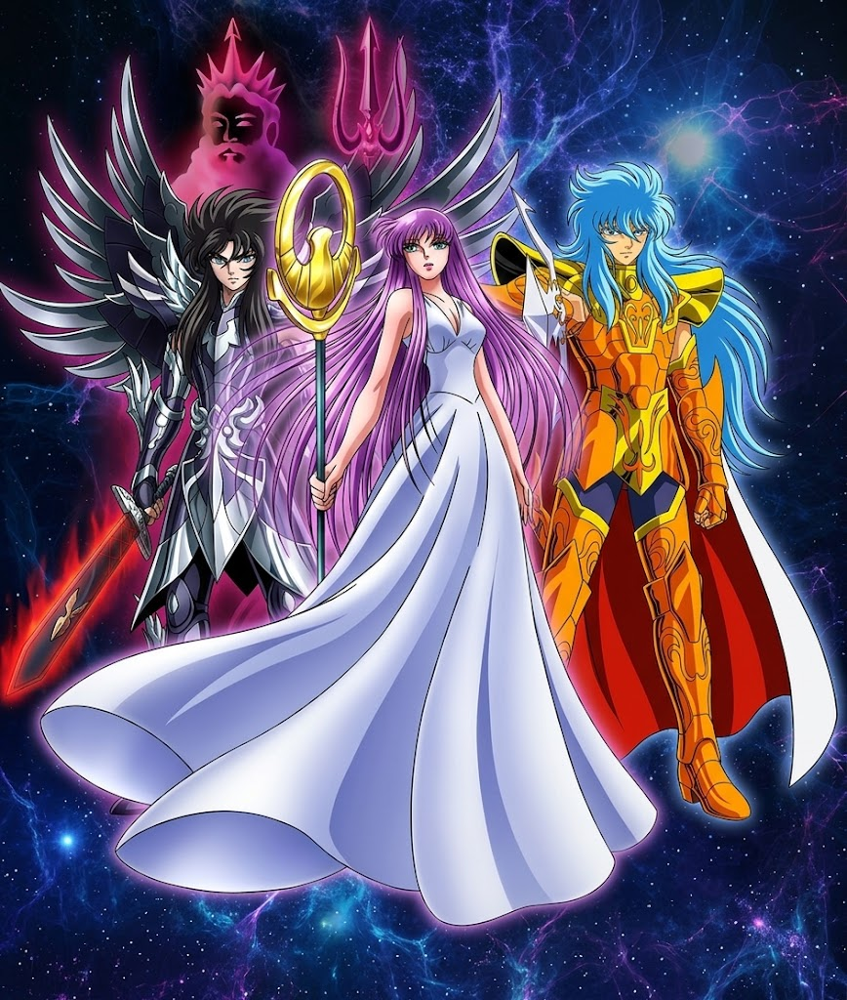

| Personagem | Constelação | Golpe Principal | Características |
|---|---|---|---|
| Seiya | Pégaso | Meteoro de Pégaso | Determinado e impulsivo, nunca desiste diante de um inimigo superior. |
| Shiryu | Dragão | Cólera do Dragão | Sábio, calmo e extremamente leal; treinado pelo Mestre Ancião no Pico dos Cinco Anciãos. |
| Hyoga | Cisne | Pó de Diamante / Execução Aurora | Frio na batalha, porém guiado pelas memórias marcantes do passado na Sibéria. |
| Shun | Andrômeda | Corrente de Andrômeda / Tempestade Nebulosa | Pacifico e bondoso, prefere evitar lutas, mas possui um poder oculto devastador. |
| Ikki | Fênix | Ave Fênix / Golpe Fantasma de Fênix | Lobo solitário e o mais poderoso da turma; surge nos momentos mais críticos para salvar Shun. |

| Signo | Cavaleiro | Técnica Marcante |
|---|---|---|
| Áries | Mu | Muralha de Cristal / Revolução de Stardust |
| Touro | Aldebaran | Grande Chifre |
| Gêmeos | Saga | Explosão Galáctica / Outra Dimensão |
| Câncer | Máscara da Morte | Ondas do Inferno |
| Leão | Aiolia | Cápsula do Poder / Relâmpago de Plasma |
| Virgem | Shaka | Tesouro do Céu (O homem mais próximo de Deus) |
| Libra | Dohko (Mestre Ancião) | Cólera dos Cem Dragões |
| Escorpião | Milo | Agulha Escarlate (Antares) |
| Sagitário | Aiolos | Trovão Atômico / Flecha Dourada |
| Capricórnio | Shura | Excalibur |
| Aquário | Camus | Execução Aurora |
| Peixes | Afrodite | Rosas Diabólicas Reais |

| Saori Kido (Atena): | A deusa da sabedoria e da guerra justa reencarnada para proteger a Terra. |
| Julian Solo (Poseidon): | Imperador dos Mares que busca purificar a Terra através de um grande dilúvio. |
| Hades: | Senhor do Submundo que visa alinhar os planetas (O Grande Eclipse) para cobrir o mundo em escuridão eterna. |

© Todos os direitos reservados - Miguel Oliveira